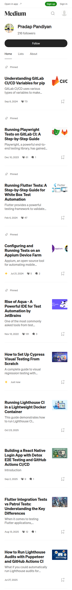
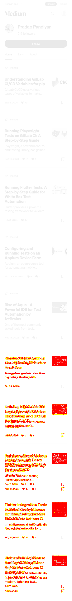
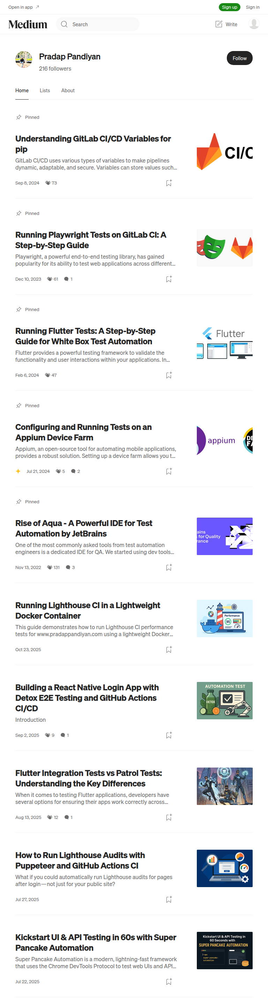
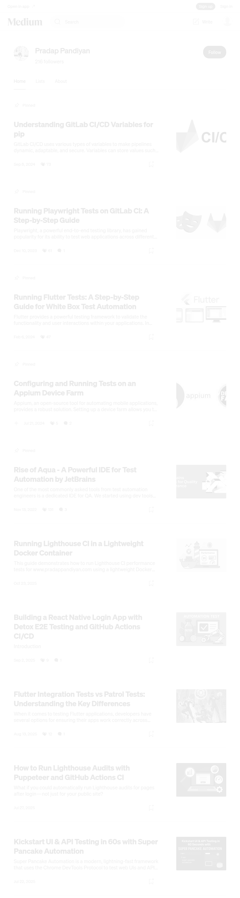
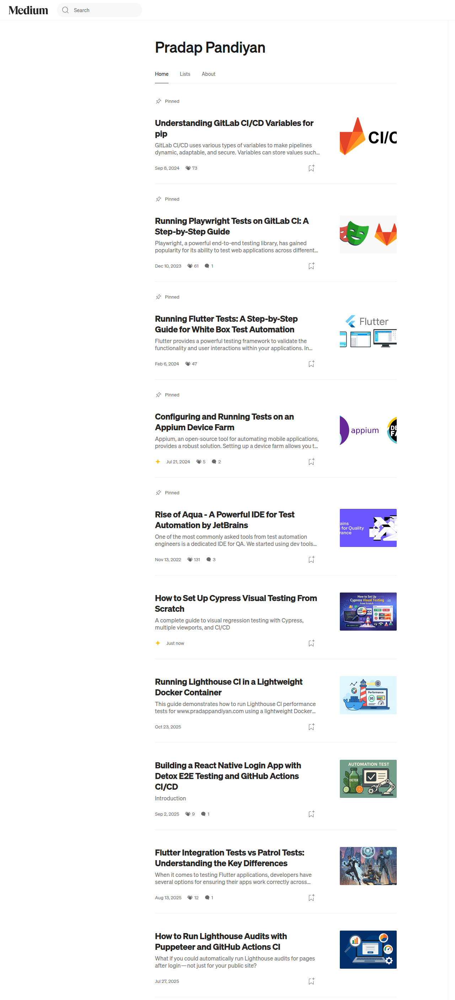
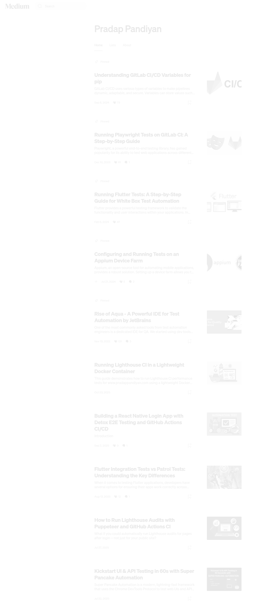

🖼️ Cypress Visual Regression Report
✓ 0 passed
✗ 3 failed
Snapshot
Baseline
Actual
Diff
homepage-mobile


homepage-tablet


homepage-web


Generated: 2026-02-03T17:17:10.421Z | Run
npm run cy:report
to regenerate